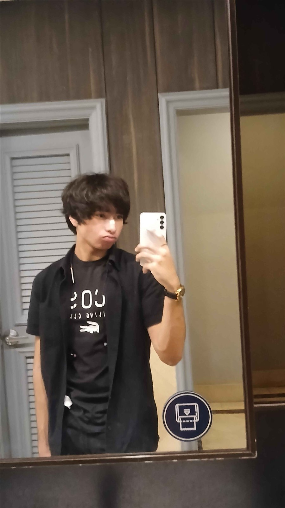

Listening to Music
Music keeps me focused and locked in. I work and function better while listening to music I love — it keeps my mind in sync.
WELCOME TO MY W3BSYTE
|
Future software engineer / game developer, always striving to reach beyond the stars.

From the Overwatch arena to the night sky, I aim beyond the stars.
Competing in an Overwatch esports league taught me what it takes to perform when it counts: split-second decisions, trust in your team, and the discipline to review every loss until it becomes a lesson. That mindset carried my team to first place in 9 separate tournaments, and every one of those wins was earned the same way: together, one round at a time.
Away from the screen, I’m drawn to the night sky. Astronomy keeps me curious and humble, a reminder that there is always more to explore than what we can see. Together, the arena and the cosmos shape how I live: compete with heart, stay curious, and never treat the stars as the limit.
Games are where all of it meets. I love playing them, and I love understanding how they work, which is why I’m into game development: turning ideas into worlds, mechanics, and moments that make other players feel what I feel when a match comes together.
Years of competitive Overwatch
Consecutive tournaments won
Hours of coding experience
Music keeps me focused and locked in. I work and function better while listening to music I love — it keeps my mind in sync.
When I'm not doing anything, I like to keep myself distracted and away from stress by playing games like Overwatch, Cyberpunk 2077 and Forza Horizon 6.
The same way I love playing games, I also love watching movies. Some of my favourites are Interstellar, Pacific Rim and Blade Runner 2049.
I love expressing how I feel towards the person I truly love. I often write poetry and letters as a way of telling her how I truly feel.
The same way I'd break down a match round by round, I break large, complex challenges into logical, manageable pieces, whether I'm debugging structured C++ programs or troubleshooting intricate technical workflows.
Games are where logic and imagination meet for me. I bridge analytical precision with creative design through 3D modeling, procedural geometry generation, and building physics-grounded simulation assets from scratch, like my Tachyon 714 Light Sail.
Esports taught me to review every loss until it becomes a lesson. I bring that same habit to my work, testing and revising until every technical specification and visual detail meets a high standard.
The night sky keeps me curious. A deep interest in astronomy, aerospace engineering and emerging technologies drives me to connect big, forward-looking ideas with practical execution, and to never treat the stars as the limit.
Competing at a professional level taught me to stay calm under pressure and trust the people around me. I balance intense focus on passion projects with steady efficiency on routine tasks, making step-by-step progress toward long-term goals without burning out.
A laser-pushed interstellar light sail I designed and built for KSP, made for recreating the ISV Venture Star or towing any ship you like. A 2.8 m canister launches a seed pod 1.5 km ahead on carbon-nanotube tethers, which unfolds into a 2 km mirrored dish. Released open source on SpaceDock for KSP 1.12.5.
View on SpaceDock →A real-time audio visualizer I built purely in C++. Link it to Spotify and it syncs with what you're listening to, displaying the song's lyrics live. Choose between three visualizer modes (classic bars, my signature circle visualizer, and a pulsing ring) and customise nearly every part of the look.
Version 1 has been retired and is no longer available to download. All development has moved to Pulse Visualizer 2.0, a full overhaul that builds on everything here.
GitHub discontinuedThe full release of my massive overhaul for Pulse Visualizer. It keeps everything the original does (the three visualizer modes, Spotify lyric sync and deep customisation) and pushes it all much further, with more polish, better performance and even more control over every part of the visuals.
View on GitHub →College of Innovation and Integrated Technology
Studying Entertainment and Multimedia Computing, the field I've wanted to be in all along. I'm building the skills for my future career here, going deep into programming and 3D modeling, and finally learning the craft behind the games and software I've always been drawn to.
CEU Malolos
I studied under the Caregiving track of the STEM strand, a path with little connection to the career I wanted. It wasn't the right fit, but it made me certain of where I actually belonged, and pushed me to pursue it with full commitment the moment I had the chance.
Competitive Esports
Being accepted onto a professional team was where it all started. Competing at that level taught me discipline, teamwork and how to perform under pressure, along with the habit of constantly analysing and improving. It's where I learned what makes me great today.
“ No matter how high you dream, Reach for the Stars, Always. — Amir Soltan
Have a question, an idea, or just want to say hi? My inbox is always open.
Email amirsamehow1@gmail.com Phone +63 966 234 9787